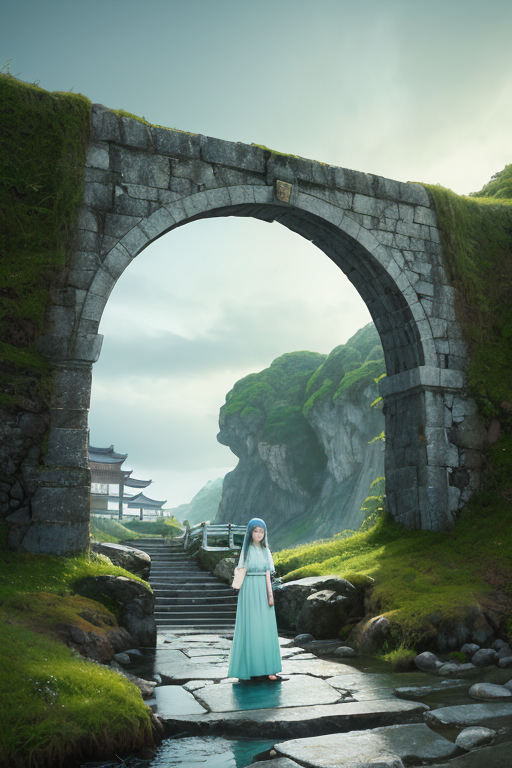
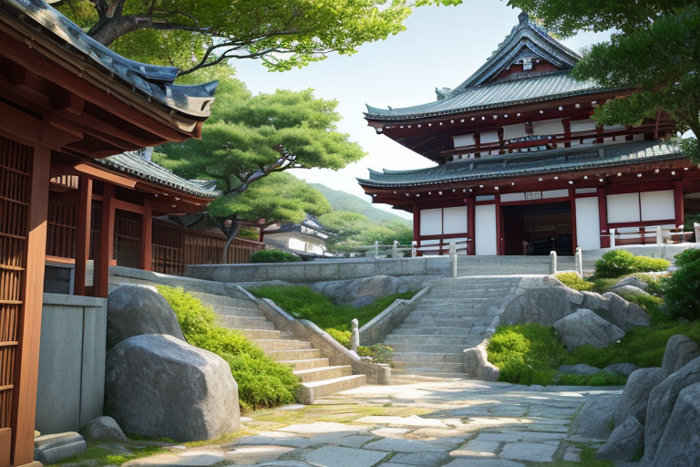
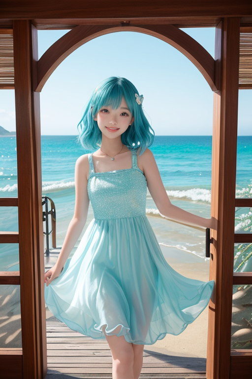
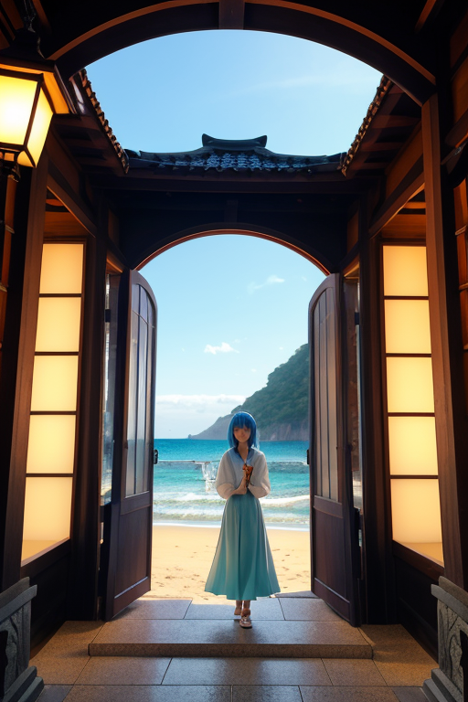

第一章 現実の千葉
あなたはまだ気づいていない。この土地にも、王がいることを。
九十九里浜の砂浜は、太平洋の息吹をそのまま受け止める、長く白い境界線だ。潮風は、時に優しく、時に荒々しく、陸地を撫でる。その風は、鋸山の山肌を登り、房総の丘陵を越え、成田の空港へと続く。ここは、常に「外」と接する土地である。海からは魚が、空からは人々が、この地を「入口」として訪れる。
銚子の漁港では、朝もやの中、漁師たちが網を整える音が響く。醤油の熟成する匂いが潮香りに混じる。養老渓谷の深い緑は、内陸へと続く静かな入口だ。そして成田山新勝寺——国内外から多くの祈りが集まるその場所は、目には見えない、心の境界線に立つ門そのものと言える。
この土地の現実は、境界に生きることだ。海は恵みを与え、時に脅威となる。大地は穩やかだが、その下ではプレートがせめぎ合う。すべてが、内と外の狭間で、絶え間ない交渉のなかにある。

第二章 歪みの兆候
成田山新勝寺の石段を、重い足取りで登る外国人の一団がいた。彼らの背負う荷物は、この土地の空気とは異質な疲労を湛えている。観光ではなく、避難だった。遠い国で起きた紛争の余波が、海を越え、この「入口」に流れ着いたのだ。
チバリア・ゲートは、鋸山の頂でその気配を感じ取った。潮風が運ぶのは塩だけではない。人の嘆き、疎外感、未来への不安——それらが目に見えない歪みとなって、房総半島を取り巻く海境に蓄積し始めていた。歪みは物理的な災害ではない。人と人、文化と文化の間に生じる、見えない亀裂だ。
ウミナリアが九十九里浜の波打際で報告する。「来訪者のエネルギー、乱流状態。受容の限界を超えつつあります」。門王は静かに頷いた。開かれた門は、あらゆるものを迎え入れる。しかし、流入が急激すぎれば、門そのものが軋み、土地の均衡が崩れる。彼の役目は、その流入を微調整し、軋みが破綻に至らないようにすることだ。潮風をそっと整え、養老渓谷の深い緑に安らぎを増幅させた。すべてを解決はできない。ただ、ほんの少し、出会いの角度を変えるだけだ。

第三章 軋む門
成田山新勝寺の石段を、足音を乱して駆け上がる集団がいた。興奮に満ちた声は、静謐な空気を切り裂く。彼らはある海外の動画配信者に熱狂するファンで、その人物が参拝すると聞きつけ、一斉に押し寄せたのだ。ゲイリアの報告は正確だった。このエネルギーは、単なる「来訪」を超えている。土地と人々の日常を圧迫する「流入」だ。
門王は境内の片隅に立ち、その光景を見つめた。歓迎すべき来訪者か。それとも、門を守るために制御すべき乱流か。彼の内側で、二つの原理が軋んだ。開かれた門は、あらゆるものを無条件に受け入れるべきか。だが、あまりに急激な流入は、門そのものを歪ませ、この土地の穏やかな「間」を壊してしまう。彼はそっと手を挙げた。九十九里浜から運ばれた潮風を、ほんの少しだけ境内へと導き、その風が参道の銀杏の葉を揺らし、微かなざわめきを起こす。それは、熱狂の只中に、ほんの一瞬の「間」を挿入するための調整だった。
すべてを拒むことはできない。すべてを受け入れることもできない。王の仕事は、その狭間で、軋みが破綻しない程度に流量を調整することだけだ。彼は無感情であるはずだった。しかし、押し寄せる熱気と、困惑する地元の参拝者の顔を見比べた時、胸に鈍い重みを感じた。これが、感情というものか。

第四章 妖精との対話
成田山の喧噪が遠のく境内の片隅で、主席妖精ゲイリアが門王の傍らに立っていた。彼女の目は、門をくぐり、あるいは門前で立ち止まる全ての者を、潮風のように淡く追っている。
「王よ。あなたは『入口』そのものだから、迷うのです」
ゲイリアの声は、九十九里浜に寄せる波の音のように、繰り返しで優しかった。
「私たちは、出会いの『導線』を微調整するだけ。誰がどの門をくぐるかは決められない。ただ、くぐる瞬間の風圧が強すぎないように、足元が滑らないように、ほんの少し手を貸す。それが、この『チバリア・ゲート』の役目です」
門王は黙って聞いた。彼が感じた重みは、自分が「選別」を望んでしまったからかもしれない。
「別れもまた、一つの門です。銚子の漁師が海に出るように、養老渓谷の水が流れ去るように。すべては通過するもの。私たちができるのは、その速度を、ほんの少しだけ緩やかにすること。潮風が、塩の味を運び、また洗い流すように」
ゲイリアは、落花生の畑と海苔簾が並ぶ風景を見つめた。
「問いは『あなたの入口はどこか？』ですが、答えは私たちにはありません。ただ、その人が、自分自身の門の前に立った時、ためらいすぎず、無謀すぎず、一歩を踏み出せる『間』を作ること。それだけです」
門王は、自らが「門」であることを、静かに噛みしめた。

第五章 微調整と余韻
鋸山の山頂から、東京湾と太平洋を隔てる境界線が、かすんだ水色の帯のように見える。門王は、その狭間に立つこの地が、常に外からの風を受け入れ、内なるものを運び出す「入口」そのものであることを思った。彼の役割は、その流れを滞らせず、かといって急激にせず、微調整することだ。
成田山新勝寺の参道。海外からの観光客が、お守りを手に戸惑っている。ウミナリアがほんの少し潮風をそっと送り、隣にいた地元の老人が、自然に話しかけるきっかけを作る。言葉は完璧でなくとも、醤油の香り立つ団子を分け合う間に、小さな理解が生まれる。それは災害ではない、人の心の小さな「歪み」の調整だ。
門王は、九十九里浜の砂の上を歩く。打ち寄せる波のリズムは、彼がほんの少し調整する「間」そのものだ。速すぎず、遅すぎず。全ての出会いと別れには、ちょうどよい速度がある。彼が感情を持ち始めたのは、この地で繰り返される、そんな静かな邂逅の数々を見てきたからかもしれない。
潮風が、また新しい匂いを運んでくる。終わりは、常に次の始まりへの入口である。
あなたの町にも、王がいる。